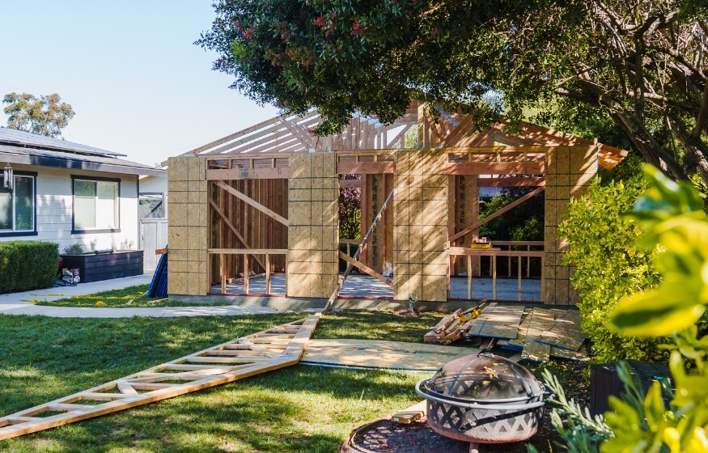
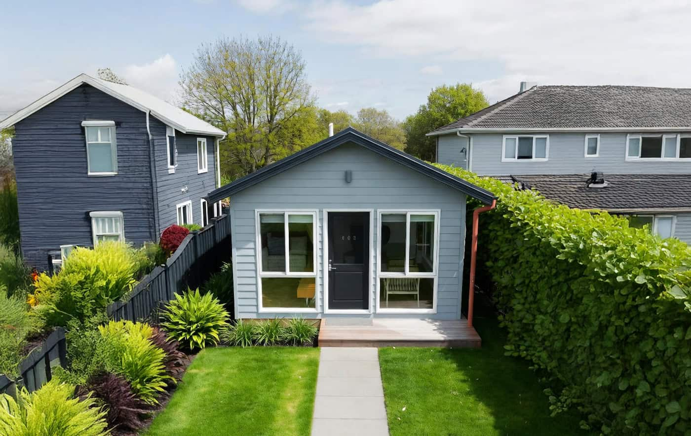
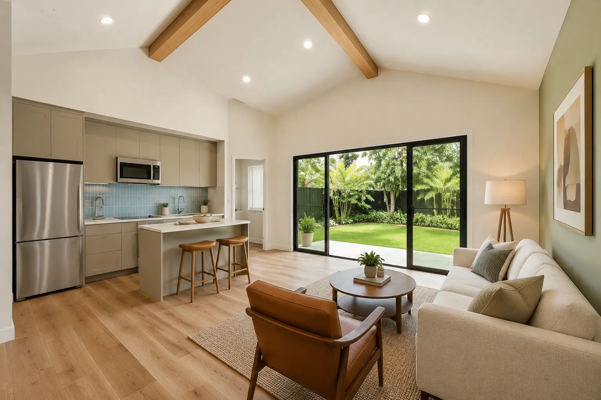

Topic guides — the questions around the cost
The eight decisions the research found national pages glossing over. Each guide states what is actually known, and flags what only your city, lender or attorney can answer.
Can I build on my lot? Zoning, setbacks, lot size
City code PDFs are close to unreadable, which is why this is the most-searched question in the cluster. Work it in this order:
- Find your parcel on your city’s zoning map and note the zone.
- Check three numbers for that zone: minimum lot size, rear/side setbacks, and maximum lot coverage.
- Work one example with your real measurements before paying for drawings — if the unit plus setbacks exceeds lot coverage, the project stops there.
ADU vs. tiny house on wheels
A tiny house on wheels is banned in roughly 80% of US municipalities (FindaTinyHouse figure) as a permanent dwelling. An ADU is a permitted structure on your own lot, which is why it can be financed, insured and rented as housing.
- Legal where you live? ADU: yes in the five statewide-law states, city-dependent elsewhere. THOW: usually no.
- If a seller tells you a THOW needs no permit, treat that as the red flag it is — confirm with your city.

Prefab vs. site-built
Prefab vendors quote 2–8 weeks delivery; a site-built ADU runs 6–18 months (vendor ranges). The speed is real — the price comparison usually is not, because prefab quotes commonly leave out:
- Delivery and crane placement
- Foundation and utility hookups
- Site work — the same $20k–$50k line
Ask any prefab vendor for an all-in price in writing, with those three lines itemised, before comparing it to a builder’s quote.
Financing: HELOC, cash-out refi, FHA 203(k), construction loan
Lender pages sell loans; the research’s gap is an independent comparison. No rates are published here — the research verifies none — so compare on structure instead:
- HELOC: draws on existing equity; fits phased builds like garage conversions.
- Cash-out refinance: replaces your mortgage; compare the new rate on the whole balance, not just the ADU amount.
- FHA 203(k) / construction loan: built for projects, with draws and inspections — more paperwork, purpose-made.
- The appraisal problem: ADUs often have no comparable sales nearby, so the appraised value can come in under build cost. Ask your lender how they handle that before you apply.
Permits: cost and how long approval takes
Permit timelines split by city tier — ADU-friendly vs. slow — more than by state. The research does not publish a verified per-city fee or day count, so:
- In California, check the under-750 sq ft impact-fee waiver first — it can remove a whole fee category.
- Ask your permit office two questions in writing: total fees for your size, and current average review time.
- The common delay is an incomplete application, not the review itself — a pre-application meeting is usually the cheapest week you will save.

A backyard cottage for an aging parent
“Granny pod” and backyard-cottage options for a parent run $40,000–$250,000 in the roundups the research cites. Beyond price, weigh:
- Accessibility from day one: step-free entry, a bathroom that fits a carer, door widths.
- Proximity vs. privacy — close enough to help at 2 a.m., separate enough for two households.
- Medicaid and estate implications of building on your lot with a parent’s money — talk to an elder-law attorney before funds move. This page cannot advise on that.
Does an ADU raise my property value — and my tax?
Realtor pages hand-wave this; the assessor does not. Two separate realities:
- Value: added value is not the same as build cost. Appraisals depend on comparable rentals and sales, which may not exist yet in your neighbourhood.
- Tax: a new permitted structure is normally reassessed by your county. Budget for a higher tax bill from completion, and confirm the reassessment rules with your county assessor.

Rental rules: Airbnb or long-term only?
Whether you can short-term-let an ADU is a city rule, and it is one of the most-searched questions in the cluster. Before you count any rent:
- Check your city’s short-term-rental rules for ADUs specifically — many cities allow long-term rental but ban ADU Airbnbs.
- Check owner-occupancy and parking requirements that attach to the permit.
- Run the calculator’s return maths on the long-term rent you are actually allowed to charge, not the nightly rate you hope for.